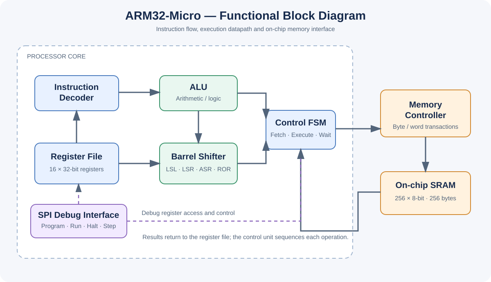
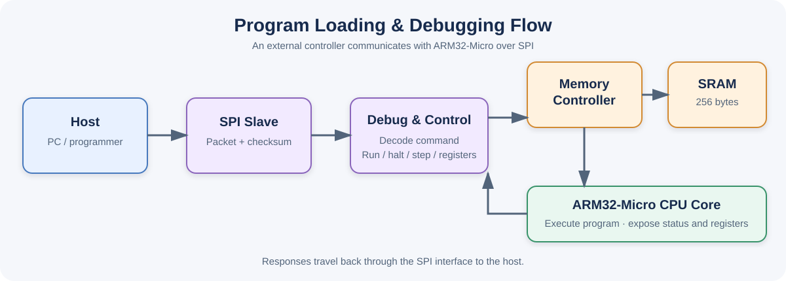

It began with a simple question.
What would it take to build a processor of my own? Not just write software for one, but describe the hardware itself and make the different parts work together.
I started by splitting the processor into smaller pieces. The ALU would handle arithmetic and logic. The register file would hold the values the processor was working with. The decoder would interpret instructions, and the barrel shifter would take care of shifting and rotating data.
Each block was manageable on its own. The difficult part was getting them to agree on timing, control signals and data flow once they were connected.
Putting the pieces together.
ARM32-Micro uses a 32-bit datapath and a set of 16 registers. The processor fetches and decodes instructions, executes operations through the ALU and shifter, and uses a memory controller when an instruction needs to access memory.
I had to work through the control logic carefully. A processor cannot simply fetch, execute and access memory whenever it wants. Those actions need to happen in the right order, so I used a finite-state machine to coordinate the stages.

Getting data in and out.
A processor needs somewhere to keep instructions and data. For this design, I worked on integrating an SRAM macro into the Tiny Tapeout project. The memory is divided into regions for data and program storage, so the processor can fetch instructions and read or write data.
I also wanted a way to interact with the chip from outside. That led to an SPI debug interface. Through it, a host can load a program, start or halt execution, step through instructions, and inspect or modify register values.
Getting the SPI interface and the processor to share access to memory without interfering with each other was another piece of the design that needed careful control.

Most of the work was debugging.
Writing the modules was only one part of the project. A signal could be correct in one module and still cause a problem when it reached another. I spent time tracing state transitions, checking instruction execution and making sure the debug interface behaved as expected.
Simulation helped catch logic errors before moving further. I also had to deal with practical toolchain problems: simulator setup, Python environments, build scripts and differences between Windows and Linux. Moving parts of the workflow into WSL made the environment more consistent, but it took some effort to get everything running.
Taking the design beyond Verilog.
The next challenge was the physical-design flow. RTL describes what the circuit should do, but a chip also needs its cells placed, connected and checked against the manufacturing rules of the process.
That brought a different set of problems: SRAM macro integration, floorplanning, power connections, placement, routing, timing and design-rule checks. Some issues came from the design itself; others came from configuration or from how the tools expected files and macros to be arranged.
Working through those problems made it clear that building a processor is not just a logic-design exercise. The physical implementation has its own constraints, and the design has to satisfy both sides.
It is still a work in progress.
ARM32-Micro has come a long way from a collection of separate Verilog modules, but I am not treating a passing stage of the flow as the finish line. Simulation, SRAM integration and physical-design checks all need to agree before the design is ready for submission.
There are still things to verify and improve. That is part of the point of the project: learning how the whole process works, from an instruction moving through a processor to the layout that could eventually become silicon.
And I'm not done yet.